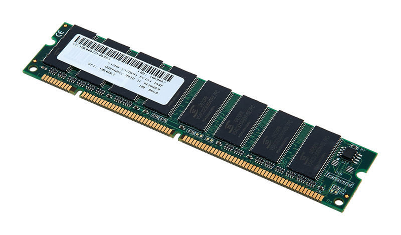
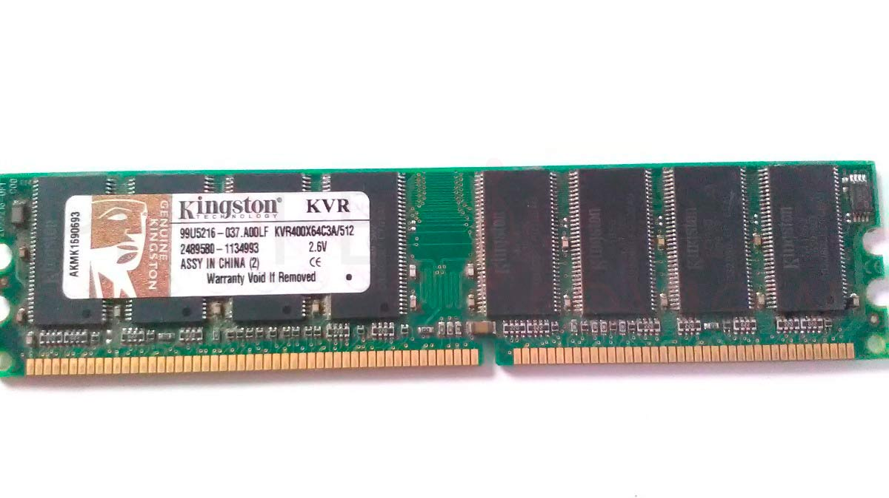
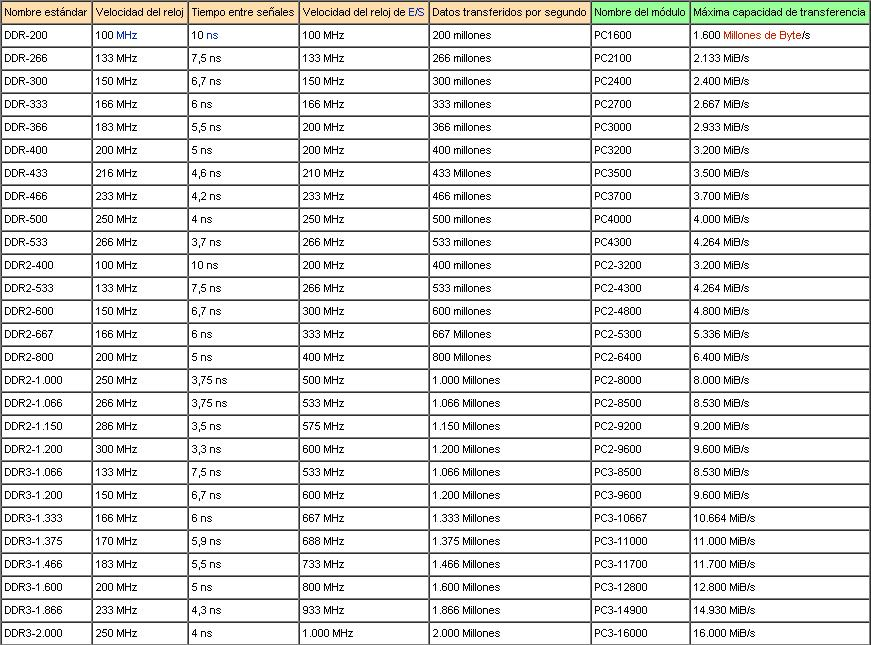
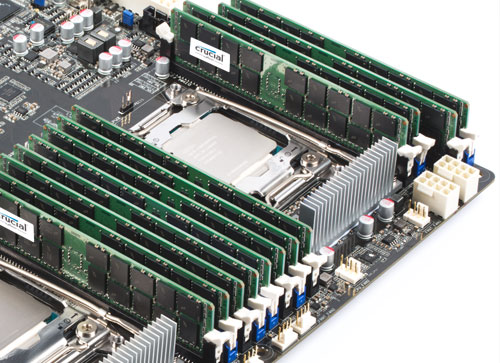

Tipos de módulos
Una vez vistos los distintos componentes físicos de las memorias RAM, tendremos también que conocer el tipo de encapsulamiento o módulos que montan. Estos módulos básicamente están formados por la placa de componentes y el bus de conexión junto con sus pines de contacto. Entre otros, estos son los módulos más utilizados antes y ahora:
- SIMM: este formato lo utilizaban las computadoras antiguas. Tendremos módulos de 30 y de 60 contactos y bus de datos de 16 y de 32 bits.
- DIMM: este es el formato utilizado actualmente para las memorias DDR en sus versiones 1, 2, 3 y 4. El bus de datos es de 64 bits y puede tener: 168 pines para las SDR RAM, 184 para las DDR, 240 para las DDR2 y DDR3 y 288 para las DDR4.
- SO-DIMM: será el formato DIMM específico para ordenadores portátiles.
- RIMM: estos módulos montaban memorias RDRAM o Rambus DRAM. Luego los veremos. Estos módulos cuentan con 184 pines de conexión y un bus de 16 bits.
Tipos de almacenamiento
Podemos diferenciar dos tipos de RAM según la tecnología de almacenamiento.
-
DRAM ( Dynamic RAM )
- Cada bit se almacena en un condensador y debido a ello necesitan un refresco frecuente para no descargarse.
- Por lo anterior, son mas simples de implementar y también mas pequeñas.
-
SRAM ( Static RAM )
- Cada bit se almacena en un circuito flip-flop, por lo que no necesitan un refresco tan frecuente.
- Cada circuitor flip-flop se implementa con varios transistores, por lo que estas memorias son mas complejas y mas grandes.
SDRAM ( Synchronous DRAM )
 A diferencia de las anteriores esta memoria RAM dinámica cuenta con un reloj interno capaz de sincronizar esta con el procesador. De esta forma se mejoran notablemente los tiempos de acceso y la eficiencia de comunicación entre ambos elementos.
DDR SDRAM ( Double Data Rate SDRAM )

Es una evolución de la anterior, aumenta la velocidad sin aumentar la frecuencia, pues lo que permite es leer
tanto en la fase
alta del ciclo de reloj como en la baja.
Así, una memoria que funcione en un bus con una frecuencia de 100 MHz,
presentaría un ancho de banda de 1600 MB/s. (Lo explico: 100 MHz x 2 x 64 = 12.800 MHz / 8 =
1.600 MB/s aprox.. El 2 viene por ser DDR, y el 64 es el número de bits transferidos (palabra del
sistema que en los sistemas actuales es 64). Todo ello lo multiplicamos (100*2*64) y nos da
12.800 MHz o 12.800 operaciones por segundo o 12.800 bits transferidos por segundo. Como lo
queremos en Bytes dividimos entre 8 (12.800/8=1600) y con ello conseguimos el ancho de banda
que es de 1.600 MB/s aproximadamente.
Después vinieron las DDR2 que permiten que los búferes de entrada/salida trabajen al doble de la
frecuencia del núcleo, permitiendo que durante cada ciclo de reloj se realicen cuatro transferencias.
La DDR3 vuelven a aumentar la cantida bits por ciclo, con 8 transferencias por ciclo.
Finalmente la DDR4 llega hasta 16 transferencias por ciclo.
En la siguiente tabla podemos ver las velocidades de los modulos mas comunes hasta las DDR3:

Como se ha dicho todas las DDR transmiten dos bits por ciclo de tal forma que la cantidad de datos transferidos
por
segundo es el doble de la velocidad de E/S.
ECC y Non-ECC
La palabra ECC significa “Error Correcting Code”, que implica que la memoria RAM tiene un bit extra, el cual representa un código programado para detectar errores de memoria.
RDIMM y UDIMM
La Memoria RAM “Buffered” o bufereada más conocida como Memoria “Registered” ( RDIMM ) o registrada tiene un registro situado entre la DRAM y el Controlador de Memoria del Sistema. Esto hace que haya menos carga eléctrica en el Controlador de Memoria y permite que sistemas con muchos módulos de memoria permanezcan estables, de otra forma esto no sería posible. Por este hecho se usa en servidores. La memoria convencional que todos conocemos es “Unbuffered” ( UDIMM ) también llamada “Unregistered” por carecer de ese registro que tiene la memoria bufereada. 